네트워크 보안 실습 환경 구축 (Snort)
Firewall · IDS/IPS · HIDS · VPN 통합 구성 및 탐지 규칙 작성
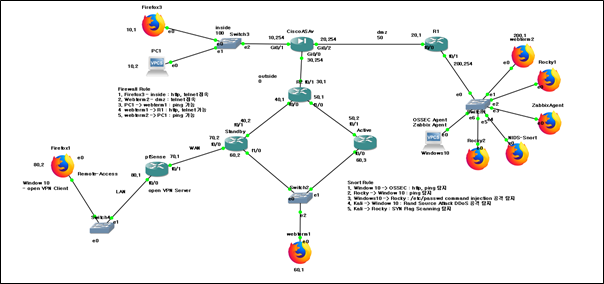Firewall Rule 실습 결과
1. Firewall Rule - Firefox3 → inside
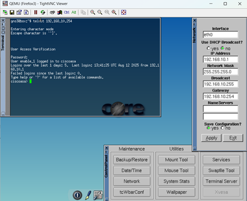 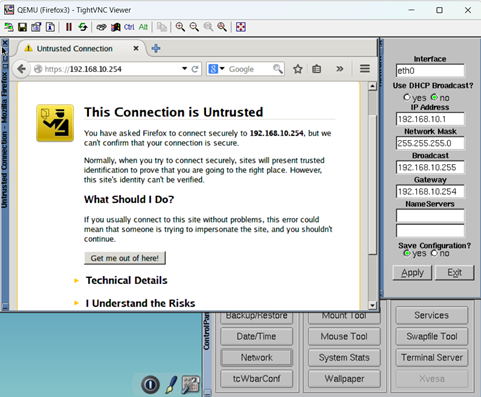Firefox3에서 내부 네트워크로 HTTP 및 Telnet 접속이 허용되는지 검증한 결과입니다.
2. Firewall Rule - Webterm2 → dmz
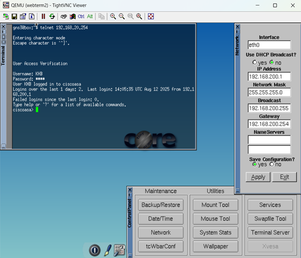Webterm2에서 DMZ 구간으로 Telnet 접속이 허용되는지 확인한 결과입니다.
3. Firewall Rule - PC1 → webterm1
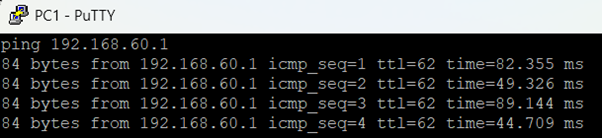PC1에서 webterm1으로 Ping 요청이 정상적으로 허용되는 것을 확인한 결과입니다.
4. Firewall Rule - webterm1 → R1
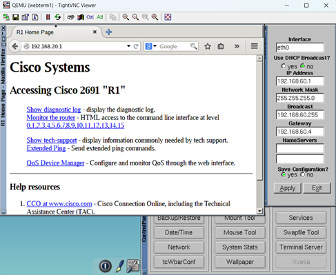 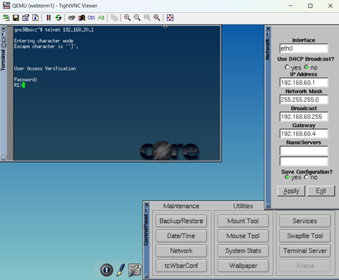webterm1에서 R1로 HTTP와 Telnet 접속이 정상적으로 허용되는 것을 확인한 결과입니다.
5. Firewall Rule - webterm2 → PC1
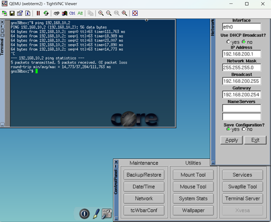webterm2에서 PC1으로 Ping 요청이 정상적으로 허용되는 것을 확인한 결과입니다.
HSRP 결과
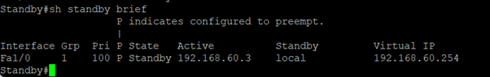 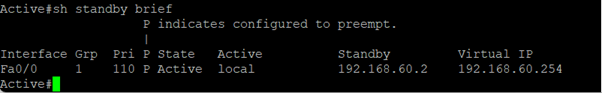 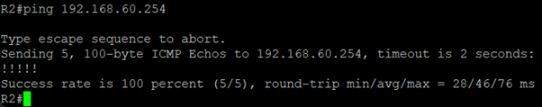HSRP 구성 결과, R3 라우터가 Standby 역할을 수행하고 있으며, Active 라우터가 정상적으로 동작하는 것을 확인하였습니다.
OpenVPN - Windows10 → pfSense
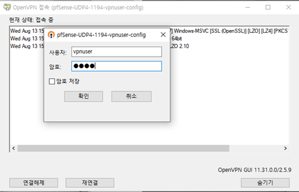 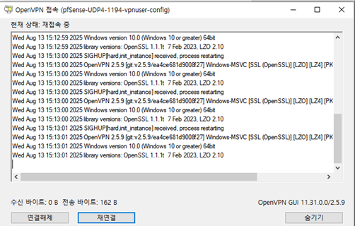 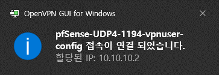Windows10 환경에서 OpenVPN 클라이언트를 이용하여 pfSense OpenVPN 서버에 접속한 결과입니다. 모든 연결 시도가 정상적으로 완료되었으며, VPN을 통한 내부 네트워크 접근이 가능함을 확인하였습니다.
Snort Rule 설정
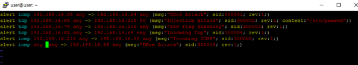Snort에 적용된 탐지 규칙 목록입니다. 각 규칙은 다양한 공격 유형을 탐지하도록 설정되어 있으며, 아래 실습 결과에서 해당 규칙들이 정상적으로 동작하는지 확인하였습니다.
Snort Rule 실습 결과
1. Snort Rule - Win10 → OSSEC
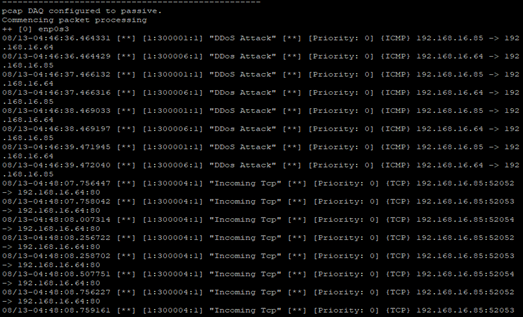Win10에서 OSSEC 서버로 HTTP, Ping 요청이 탐지되는 것을 확인한 결과입니다.
2. Snort Rule - CentOS7 → Win10

CentOS7에서 Win10으로 Ping 요청이 탐지되는 것을 확인한 결과입니다.
3. Snort Rule - HIDS → CentOS7
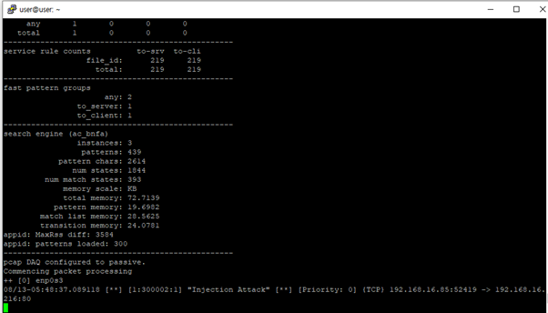HIDS에서 CentOS7로 /etc/passwd 파일을 이용한 Command Injection 공격이 탐지되는 것을 확인한 결과입니다.
4. Snort Rule - Kali → Win10
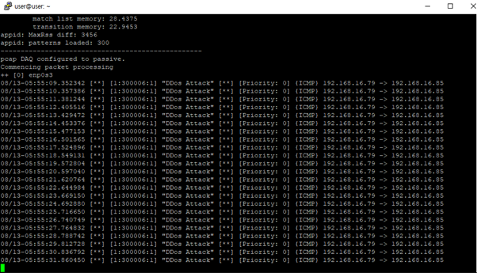Kali에서 Win10으로 Rand Source Attack DDoS 공격이 탐지되는 것을 확인한 결과입니다.
5. Snort Rule - Kali → CentOS7
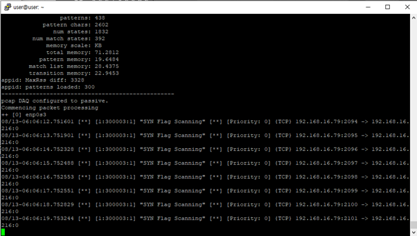Kali에서 CentOS7로 SYN Flag Scanning이 탐지되는 것을 확인한 결과입니다.
결과
각 공격 시나리오에 대해 IDS/IPS 및 HIDS가 정상적으로 탐지하였으며, 로그 분석과 규칙 튜닝을 통해 오탐(false positive)을 줄였습니다.